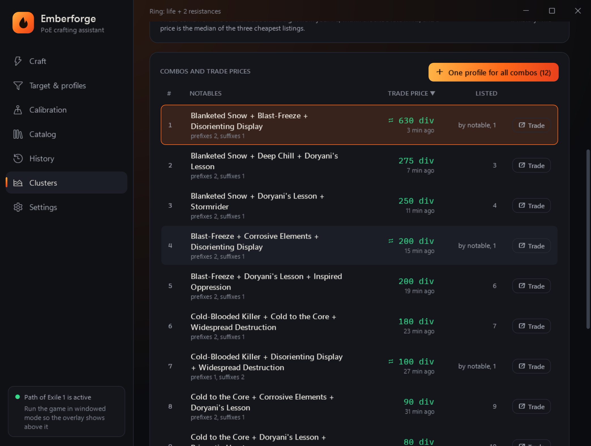

Emberforge
EmberforgeFree automated crafting tool and PoE autocraft for Path of Exile 1 and 2
Set the mods you want: Emberforge picks the next orb and stops on a hit. Free, in English and Russian, for the English and the Russian game client.
Download for freeWindows 10/11 · updates itself · or a single file, no installation

How it works
Describe the target
Start typing a mod in English or Russian: the program suggests it exactly as the game writes it. Mark the required mods and how many of the rest you need.
Record the positions
Hover the orb stacks and the item once and press the record key. Orb positions are shared by all profiles.
Press the step key
Each press is one orb. The program reads the item with Ctrl+C, checks the mods and picks the next orb itself.
Take the item
Once the target is there, “HIT!” lights up and the program never touches the good item again, however often you press.
Features
Crafting chains
Transmutation → Alteration ⇄ Augmentation → Regal → Exalted ⇄ Annulment, with junk-mod reactions and per-orb limits.
Exalt ⇄ Annul loop
In one click: a junk mod after an Exalt is annulled, the Annulment took junk → Exalt again, it took a magic-item mod → Scouring and start over.
Cluster jewels
Official trade prices of every notable combo of a cluster jewel, and one profile for every profitable combo. Free and right in the program.
T17 map rolling
Item quantity, more currency, pack size and forbidden mods, for maps and Waystones, in batches across an inventory grid.
6 sockets and 6-link
Jeweller's Orbs up to the sockets you need, then Orbs of Fusing up to 6 links. Sockets only or links only too.
Unique items
Orb of Chance spam on one base until the unique you want, and Ancient Orb spam until a unique with the right name. 1,200+ uniques in the database.
Suggestions as you type
8,600+ PoE1 and 3,500+ PoE2 mods, 2,600+ bases and 1,200+ uniques, with English and Russian names as in the game.
Odds and cost
Currency prices from poe.ninja, the cost of a session and of a hit, odds from mod weights and a trade link for the finished item.
Any hotkeys
Step, auto, record and stop on any key, a Ctrl/Alt/Shift combination or a side mouse button.
Overlay above the game
Status, attempts and hotkey hints. In a corner of the game window or anywhere on the screen, never taking focus.
PoE 2
Sinistral and Dextral Omen hints, Essences instead of Regal, the PoE 2 mod database.
Protection from mistakes
A lock on a hit, an item check before every action, server-lag protection and an emergency stop key.
Safety and the game rules
- In safe mode (the default) one key press from you is one action in the game, exactly what Grinding Gear Games requires: one server action per key press.
- Emberforge does not read the game's memory, does not inject into the process and does not change its files. It sees the item the way you do, by copying its text (Ctrl+C).
- Auto mode, where the program clicks by itself, breaks the game rules. It is off and can only be enabled after explicitly accepting the risk. Emberforge has no “human imitation” to evade the game's protection, and never will.
What to craft on a cluster jewel

Choose the jewel, the enchantment, the number of notables and the league: the program collects the prices of every full notable combo from the official trade site, right from your PC and within the site's limits, and keeps them with a check history. Sort by price, filter the expensive ones and make one profile for all combos: the crafting chain stops on any of them.
Quick start
- Download the installer and run it. New versions install with the “Update” button inside the program.
- Switch Path of Exile to “Windowed” or “Windowed Fullscreen”.
- On “Target and profiles”, pick a ready profile or start typing the mods you want.
- In “Calibration”, record the orb and item positions with F4.
- In the game, press F2 until “HIT!” lights up. Emergency stop: F10. The keys can be changed.
Emberforge, Advanced Stash Helper and Path of Craft
| Emberforge | Advanced Stash Helper | Path of Craft | |
|---|---|---|---|
| Price | free | free trial; full $8/month | Basic free; Premium from $7/month |
| “One key press, one action” mode | yes, by default | — | — |
| Game client | Russian and English | English only | not stated |
| Regal, Exalted, Annulment | yes, Exalt ⇄ Annul loop | Exalted and Annulment paid | Premium |
| Cluster jewels | prices of every combo + one profile | paid | price search in Premium |
| T17 map rolling | yes | T16.5 and T17 paid | map crafting in Premium |
| Orb of Chance, Ancient Orb | yes, up to the wanted unique | Chance in the trial, Ancient paid | Basic |
Based on poeautocraft.com and pathofcraft.net as of 13 November 2026. Emberforge is not affiliated with these projects; names belong to their owners.
FAQ
Is Emberforge free?
Yes. Download and use it for free, no sign-up and no subscription.
Is it a bot? Can I get banned for autocrafting?
In safe mode (the default) the program never presses anything by itself: one key press from you is one action in the game. Auto mode breaks the game rules and can get you banned, so it is off and can only be enabled after explicitly accepting the risk.
Does it work with the Russian game client?
Yes. Mod, base and unique texts exist for both the Russian and the English client, and the program detects the client language from the game log.
Does it support Path of Exile 2?
Yes: Waystones, crafting chains, Essences, Omen hints and the PoE 2 mod database.
How do I craft a cluster jewel with the notables I want?
On the Clusters page choose the jewel and the enchantment: the program collects combo prices from trade and makes one profile for all profitable ones. The crafting chain (Alteration → Regal → Exalted ⇄ Annulment) stops on any of them.
How do I 6-link body armour?
The “Sockets and links” strategy: Jeweller's Orbs up to 6 sockets, then Orbs of Fusing up to 6 links. Sockets only or links only too.
Can the step be on a side mouse button?
Yes. In Settings click an action's box and press any key, a Ctrl/Alt/Shift combination or a mouse button. In other programs the button works as usual.
Windows says “Windows protected your PC”.
The program has no paid code signature. Click “More info” → “Run anyway”. The exe checksum is next to it in a .sha256 file.
Where are profiles and settings kept?
In %AppData%\Emberforge. Updating the program does not touch them.